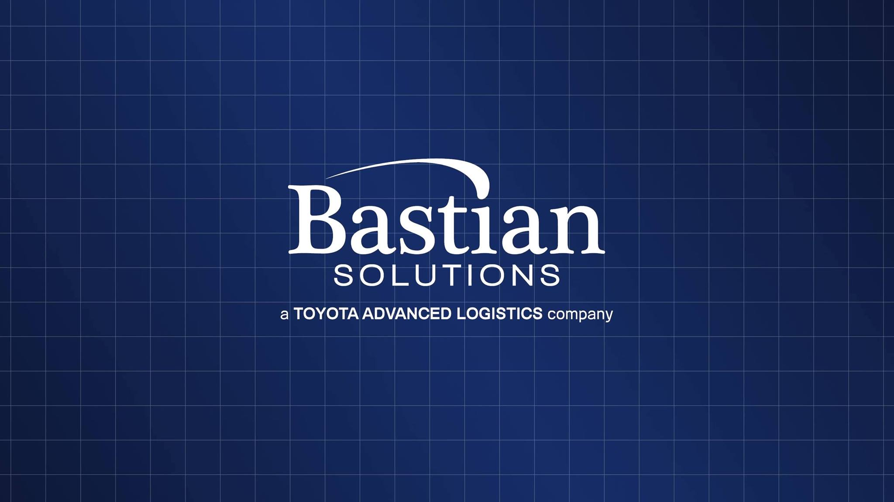

Co-op Student Software Developer at Bastian Solutions
-
C#
-
OPC
-
ROS
-
Microsoft Azure
During my time at Bastian Solutions, I had the opportunity to really dive into some exciting projects! One of the big ones was helping to build an industrial communication client using C#, specifically focusing on OPC-UA. I worked closely with a senior developer, soaking up their knowledge and adding my own touch to ensure our code was top-notch. We made sure to follow the best practices and design patterns in C# to keep things running smoothly and easy to manage down the line. Testing was a big part of my role too - I took charge of developing all kinds of tests to make sure our OPC client was rock solid. And let's not forget about teamwork! I was part of a fantastic team of five where we'd review each other's work, bouncing ideas around and making sure we were always pushing each other to do better. Oh, and I also spent some time digging into ROS (Robot Operating System) and documenting what I found on Microsoft Azure's platform. It was a blast being part of such innovative projects and I'm excited to keep pushing boundaries in industrial automation!


Crypto Web scrapper V2
-
Python
-
Google Sheets
A Python-based Crypto Web Scraper application is designed to fetch real-time cryptocurrency prices from CoinMarkCap. It offers seamless integration with Google Sheets for easy tracking of cryptocurrency prices and boasts robust error handling mechanisms for uninterrupted operation.
Mondrain Pantings
-
HTML
-
CSS
Mondrian's paintings are known for their distinct abstract style, which features primary colors, straight lines, and rectangular shapes. They were created by Dutch artist Piet Mondrian in the early twentieth century and are commonly associated with the De Stijl art movement. Mondrian's compositions are typically composed of grids of black lines intersecting with blocks of primary colors (red, blue, and yellow), as well as white space.

PawsConnect
-
HTML
-
CSS
-
Bootstrap
A playful dog-centric app created specifically for GenZ and their love of dogs. With a whimsical twist inspired by popular dating apps, 'PawsConnect' transforms how young dog lovers find their ideal match. I used vibrant CSS gradients and Bootstrap elements to create a truly pawsome user experience. Swipe through adorable profiles, each highlighting the distinct personality of its canine companion, and connect with other dog lovers. Join the pack on 'PawsConnect' now and experience the joy of canine companionship!
Roll & Win: Dice Duel
-
JavaScript
-
HTML
-
CSS
Dive into the thrilling world of 'Roll & Win: Dice Duel' - an electrifying online dice game crafted for enthusiasts of all ages. With its captivating gameplay and simple mechanics, 'Roll & Win' offers an addictive experience that keeps players coming back for more. Inspired by classic tabletop games and infused with modern flair, our game brings the excitement of rolling dice directly to your fingertips. Utilizing vibrant colors and user-friendly design elements, I've crafted an immersive experience that guarantees hours of entertainment. Join the fun, challenge your friends, and roll your way to victory with 'Roll & Win: Dice Duel' today!